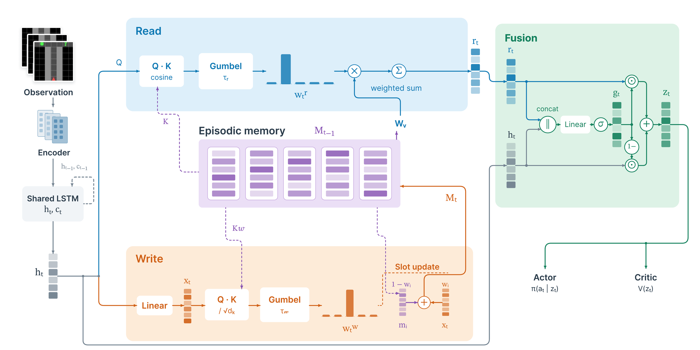
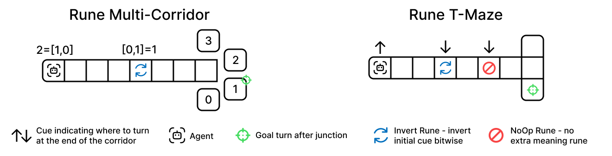
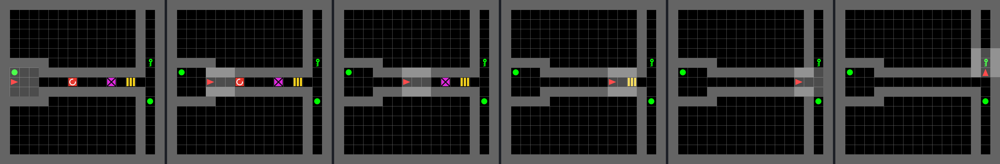
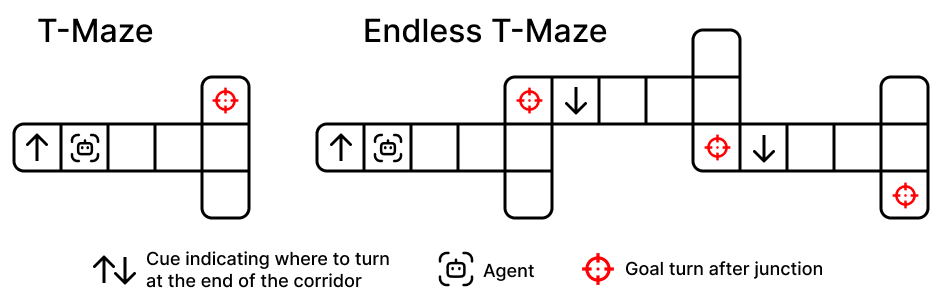
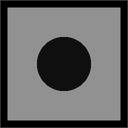
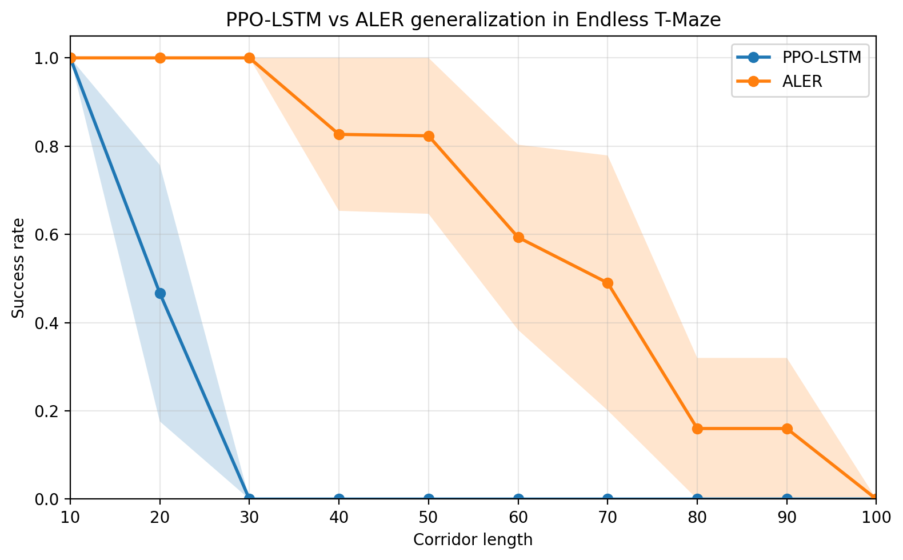
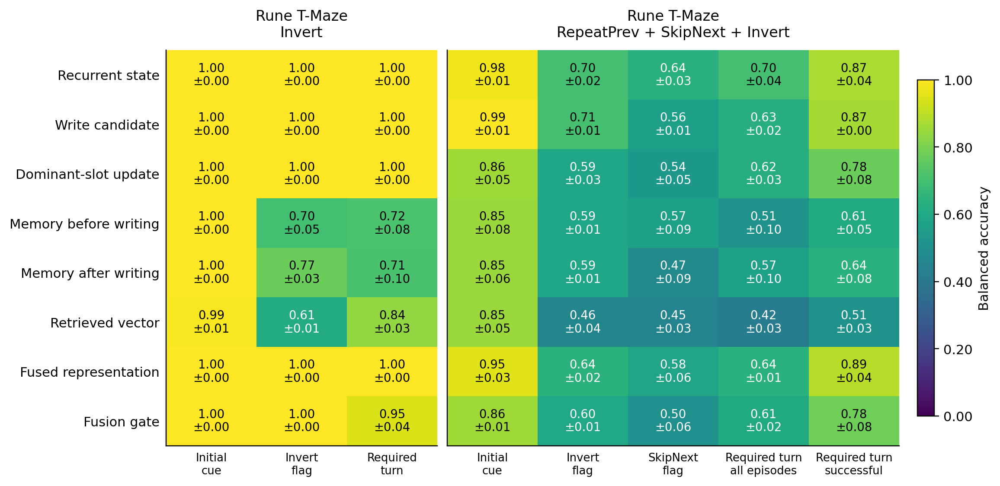

ALER: Adaptive Learnable Experience Rewriting
for Reinforcement Learning
TL;DR. In partially observable RL, a later observation can make stored information obsolete or change what it implies for the next decision. We formalize rewriting and experience fusion next to retention, introduce the Rune Mazes environments that test them, and propose ALER, an agent that pairs an LSTM with an independently addressed slot memory and a learned fusion gate.
Three memory updates
Consider a T-Maze in which the agent sees a cue at the start of a corridor and must turn toward the side it indicates at the junction. If a later corridor shows a new cue, the old cue becomes obsolete and the agent has to rewrite it. If the corridor contains a rune that inverts the cue, the agent has to turn the other way, which it can do only if it still holds the cue and applies the inversion. Each observation therefore maps the decision-relevant content to itself, to a new value, or to a different function of it.
| Update | What the observation does to the target | Example |
|---|---|---|
| Retention | keeps it unchanged | corridor step, NoOp rune |
| Rewriting | sets it to a value independent of the old one | new cue in Endless T-Maze |
| Experience fusion | transforms it by a rule that the observation specifies | Invert rune |
For tasks composed of such updates, we count the memory states that a solution needs. The count separates an online solution, which folds every rune into the stored cue, from a deferred solution, which keeps the cue unchanged and tracks the runes apart from it. Several baselines reach their lowest success rates on the compositions that need more states.
Method

- Retention. The LSTM processes every observation and tracks quantities that change at every step. A slot keeps its content while later writes put little total weight on it.
- Rewriting. An independently addressed Gumbel-Softmax write that concentrates its weight on one slot overwrites that slot in one step.
- Fusion. A learned gate gt combines the retrieved vector rt with the recurrent state ht into zt = gt ⊙ rt + (1 − gt) ⊙ ht, which feeds the actor and the critic.
Environments
Rune Mazes are three environments in which rune observations invert, cancel, reset, or repeat updates of a hidden cue. Together with Endless T-Maze, in which each of n consecutive corridors shows a new cue, they cover all three update classes under vector and pixel observations.

Invert rune changes it. Right: Rune T-Maze, in which the agent must invert the initial cue after an Invert rune and ignore a NoOp rune.
RepeatPrev + SkipNext + Invert, from the cue room (left) to the junction (right). Each rune fires once on contact.
Invert swaps the success and failure targets. | |
SkipNext cancels the next rune. | |
ResetRules restores the original targets. | |
RepeatPrev re-applies the last rune that took effect. | |
 | NoOp leaves the rules unchanged. |
Results
We compare ALER with seven baselines: PPO-MLP, PPO-LSTM, GTrXL, S5, FFM, SHM, and DNC. ALER reaches a success rate of at least 0.82 in all sixteen Endless T-Maze configurations and at least 0.99 on all five Rune T-Maze compositions, and it leads PPO-LSTM in eight of ten Rune MiniGrid Memory configurations.
Rune T-Maze
| Composition | Q* | PPO-MLP | PPO-LSTM | GTrXL | S5 | FFM | SHM | DNC | ALER |
|---|---|---|---|---|---|---|---|---|---|
| Invert | 2 | 0.42±0.11 | 0.84±0.04 | 1.00±0.00 | 1.00±0.00 | 1.00±0.00 | 0.72±0.09 | 1.00±0.00 | 1.00±0.00 |
| NoOp + Invert | 2 | 0.51±0.00 | 0.78±0.00 | 1.00±0.00 | 1.00±0.00 | 1.00±0.00 | 0.74±0.06 | 0.48±0.07 | 1.00±0.00 |
| SkipNext + Invert | 4 | 0.51±0.01 | 1.00±0.00 | 1.00±0.00 | 1.00±0.00 | 0.65±0.08 | 0.53±0.00 | 0.56±0.02 | 1.00±0.00 |
| 3 Invert + ResetRules | 4 | 0.42±0.11 | 0.81±0.05 | 0.99±0.00 | 0.99±0.00 | 0.59±0.03 | 0.51±0.02 | 0.48±0.11 | 0.99±0.00 |
| RepeatPrev + SkipNext + Invert | 10 | 0.41±0.10 | 0.83±0.02 | 0.92±0.08 | 0.99±0.01 | 0.62±0.01 | 0.55±0.01 | 0.50±0.00 | 0.99±0.01 |
Success rate on 100 validation episodes, mean ± SEM over five training seeds. Q* is the number of target states that the composition requires. Bold marks the best mean in each row.

Rune MiniGrid Memory (pixels)
| Fixed length | Random length | |||
|---|---|---|---|---|
| Runes | PPO-LSTM | ALER | PPO-LSTM | ALER |
| I | 0.80±0.03 | 0.69±0.09 | 0.93±0.07 | 0.94±0.06 |
| N+I | 0.94±0.06 | 0.77±0.03 | 0.67±0.07 | 0.92±0.08 |
| S+I | 0.51±0.03 | 0.59±0.01 | 0.62±0.07 | 0.63±0.05 |
| 3I+R | 0.53±0.04 | 0.57±0.01 | 0.53±0.01 | 0.57±0.01 |
| P+S+I | 0.49±0.03 | 0.60±0.00 | 0.56±0.00 | 0.69±0.06 |
Mean ± SEM over three training seeds, 30M steps. I = Invert, N = NoOp, S = SkipNext, R = ResetRules, P = RepeatPrev. Both agents share the CNN encoder, LSTM size, and PPO settings.
What ALER stores
Linear probes show that the learned memory follows the deferred solution. On Rune T-Maze with RepeatPrev + SkipNext + Invert, the slot memory decodes the initial cue and the recurrent state decodes the rune flags. In Endless T-Maze, the first observation of a new cue raises its decoding in memory from 0.52 before the write to 0.99 after it, so one write stores the new cue. Against constant gates with frozen weights, the learned gate has the highest mean success rate on all three probed tasks.
